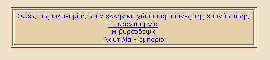
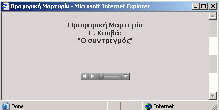
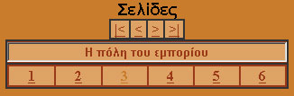

4. Πλοήγηση στις ενότητες
Το περιεχόμενο της κάθε ενότητας είναι δομημένο με τέτοιο τρόπο ώστε να γίνεται αντιληπτό εύκολα από τo οριζόντιο menu. Ωστόσο υπάρχουν μικρές διαφοροποιήσεις από ενότητα σε ενότητα.
Σε κάθε σελίδα μπορούν να εμφανιστούν τα παρακάτω στοιχεία, εκτός από το κείμενο και την εικόνα:
- Ενεργοί δεσμοί. Αυτοί είναι φράσεις του κειμένου χρωματισμένες διαφορετικά και υπογραμμισμένες. Κάνοντας κλικ σε αυτούς ανοίγει καινούργιο παράθυρο, το οποίο περιέχει περισσότερες πληροφορίες.
- Σχετικοί δικτυακοί τόποι. Κάνοντας κλικ σε αυτούς ανοίγει καινούργιο παράθυρο που παραπέμπει σε εξωτερικό δικτυακό τόπο, ο οποίος περιέχει περισσότερες πληροφορίες για το θέμα που αναλύεται.
- Παραπομπές. Οι παραπομπές εμφανίζονται σε χρωματισμένο πλαίσιο κάτω από το κύριο κείμενο, όπως φαίνεται και στην Εικόνα 4.1. Κάνοντας κλικ σε αυτές εμφανίζεται το αντίστοιχο κείμενο παραπομπής. Με τις παραπομπές επιτυγχάνεται η σύνδεση της τοπικής με τη γενική ιστορία και, όπου αυτό είναι εφικτό, με την παγκόσμια ιστορία.

Εικόνα 4.1 Παραπομπές
- Προφορικές μαρτυρίες. Κάνοντας κλικ σε μία προφορική μαρτυρία εμφανίζεται καινούργιο παράθυρο το οποίο ενεργοποιεί την εφαρμογή ήχου που περιέχει ο φυλλομετρητής σας. Κάνοντας κλικ στο κουμπί «Play» , μπορείτε να ακούσετε το αρχείο ήχου, όταν αυτό φορτωθεί στη σελίδα. Για να έχετε ποιοτική ακρόαση της μαρτυρίας, χωρίς ανεπιθύμητες διακοπές, συνιστάται να φορτωθεί ολόκληρο το αρχείο του ήχου και κατόπιν να δώσετε εντολή «play»

Εικόνα 4.2 Προφορική Μαρτυρία
- Menu πλοήγησης. Ορισμένες σελίδες είναι ομαδοποιημένες. Σε αυτή την περίπτωση στο κάτω μέρος της οθόνης εμφανίζεται ένα menu πλοήγησης, μέσω του οποίου ο χρήστης μπορεί να μεταφερθεί από μια σελίδα σε άλλη σελίδα της ίδιας ομάδας.

Εικόνα 4.3 Menu Πλοήγησης
- Στο πάνω μέρος του μενού πλοήγησης εμφανίζονται τα εξής σύμβολα:
- Παραπέμπει στην πρώτη σελίδα της ομάδας.
- Παραπέμπει στην προηγούμενη σελίδα από αυτή που βρίσκεται ο χρήστης.
- Παραπέμπει στην επόμενη σελίδα από αυτή που βρίσκεται ο χρήστης.
- Παραπέμπει στην τελευταία σελίδα της ομάδας.
- Στο κάτω μέρος του μενού πλοήγησης εμφανίζονται οι σελίδες της ομάδας αριθμημένες. Περνώντας με το «ποντίκι» πάνω από αριθμό σελίδας εμφανίζεται ακριβώς από πάνω ο τίτλος της. Κάνοντας κλικ ο χρήστης πλοηγείται στην αντίστοιχη σελίδα.
|